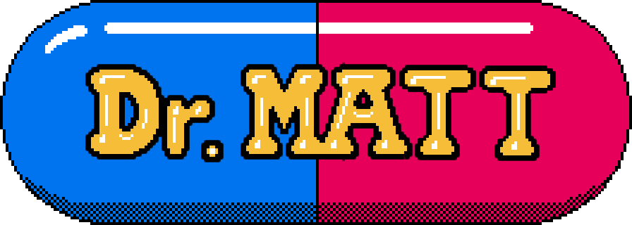

 Dr. MATT BOGGUS
Dr. MATT BOGGUS
I am a Senior Lecturer in the Department of Computer Science and Engineering at The Ohio State University.
Dr. MATT BOGGUSI am a Senior Lecturer in the Department of Computer Science and Engineering at The Ohio State University.
My primary research interests are in computer graphics, animation, and games. In addition to curriculum and course development on these topics, my other current interest is in advising undergraduate research in these areas as well as those in other closely related areas like procedural content generation (mostly in illumination, but also for models, textures, and sound), tools for game development, human-computer interaction, artificial game players, and partially or fully automated computer and board game design.
I have time to advise additional students, so contact me via email or talk to me outside of class if you are interested in starting up a project in one of the topic areas above.